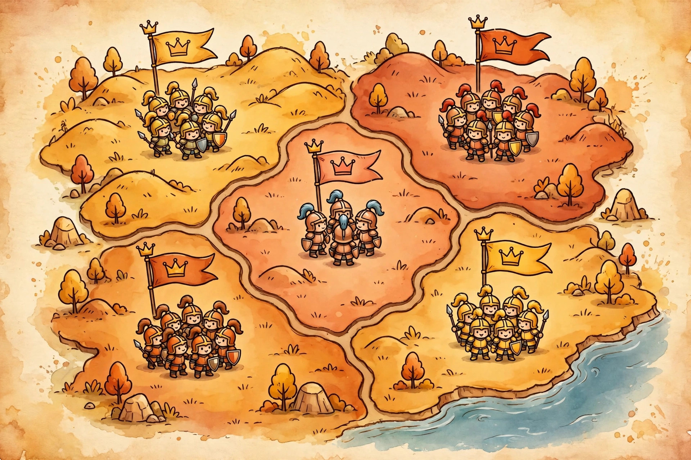

Area control games, explained

Ask five hobbyists to define "area control" and you will get at least three different games. That is not their fault: the label is used in shops and reviews for sole occupation, for majority contests, and for proportional influence — designs that share a map and almost nothing else. Buying the wrong one is a real and common disappointment, because the three feel nothing alike at the table. This guide separates them with a test you can apply to any box, uses the genre's reference design — El Grande — as the verified example, and explains the hidden variable that decides how mean any of them actually plays: the scoring clock.
One label, three different games
Sole occupation. A region belongs to exactly one player, full stop. This is the oldest form and the one most people pictured first: in Risk, as the mechanics overview at Nerdologists describes it, players place armies on territories and conquer other players' territories through dice combat, expanding as far as they dare. There is no second place in a territory. You hold it or you do not, and taking it means removing whoever is there.
Area majority. Several players can share a region, and the region pays out by ranking: most pieces scores best, second-most scores less, third gets scraps or nothing. Nobody is removed for losing a count — they are simply outnumbered. The fight is over relative presence, which makes it a game of arithmetic and bluff rather than extermination.
Area influence. Presence is proportional and often abstract — influence markers rather than armies. BoardGameGeek's own mechanic page defines this family precisely: multiple players may occupy a space and gain benefits based on their proportional presence in it. Twilight Struggle is the standard cited example, where influence markers placed on countries drive scoring without a single battle on the map.
The store test, then, is one question: when two players are in the same region, what happens? If the rules say one must leave, it is sole occupation. If both stay and the bigger stack wins a ranking, it is majority. If both stay and each gains in proportion, it is influence. That thirty-second check tells you more about a game than the label on the box.
How a majority is actually counted
Majority games live or die on their counting rules, and three details are worth checking in any rulebook before a first play:
What counts as presence. Units, usually — but some designs weight special pieces or buildings. BoardGameGeek's canonical example is El Grande, where players earn their score in a region by having the most caballeros — knight pieces — in that region. Plain pieces, plain count: part of why the game became the reference.
What a tie does. Tied players might both score the lower rank, split the points, or score nothing. Tie rules sound like fine print and play like the whole game, because a tie is the cheapest way to spoil a leader's region: you do not have to beat their stack, only match it, if matching drops them a rank.
When the count happens. Continuously, on a trigger, or at fixed scoring rounds. This one is so important it gets its own section below.
El Grande: the reference design, verified
Specs verified against reference listings for this guide, October 16, 2026: El Grande was designed by Wolfgang Kramer and Richard Ulrich and published by Hans im Glück in 1995. It plays with 2–5 players in about 90 minutes, ages 12 and up. The board is Renaissance-era Spain, where the nobility — the Grandes — fight for control of nine regions. It won both the Spiel des Jahres and the Deutscher Spiele Preis in 1996, the hobby's two big German prizes, in the same year.
| Spec | El Grande |
|---|---|
| Designers | Wolfgang Kramer & Richard Ulrich |
| Publisher / year | Hans im Glück, 1995 |
| Players / time | 2–5 players, about 90 minutes |
| The contest | Majority of caballeros in each of nine regions of Spain |
| Scoring clock | Nine rounds; rounds 3, 6 and 9 are scoring rounds |
| Honours | Spiel des Jahres and Deutscher Spiele Preis, both 1996 |
What made El Grande the template is restraint. The pieces are identical, the count is public, the board is small enough — nine regions — that every player can track every contest, and the intrigue comes from when pieces move rather than from special powers. Most majority games published since are, in some combination, El Grande plus something: plus combat, plus hidden information, plus a bigger map. Knowing the baseline makes the additions readable — you can ask what each addition does to the count, the ties, or the clock, and judge a new design in minutes.
The scoring clock decides how mean it feels
Here is the variable explainers almost never name. Nerdologists' overview observes that area control can feel mean because the player who takes an early lead commonly gets ganged up on by the whole table. That is true — but it is not a personality trait of the mechanic. It is a consequence of the scoring clock, and different clocks produce predictably different tables:
Continuous or end-game-only scoring makes every region a permanent emergency. The leader is visible from the first hour and remains the target for all of it; coalitions form early and the game becomes about the leader, not the map. Fixed scoring rounds — El Grande's rounds 3, 6 and 9 — schedule the conflict. Between scorings, positions are provisional and players build quietly; as a scoring round approaches, the table sharpens, regions get contested, and immediately after scoring the pressure releases and rebuilding starts. The ganging-up still happens, but it happens in pulses before a count, and a player buried in round 3 has rounds 6 and 9 to recover in. Triggered scoring, where a player can call a count, adds a bluffing layer: the threat of scoring becomes a weapon of its own.
A practical decision framework for a first purchase: if your group dislikes sustained targeting, buy a fixed-round majority game, not a sole-occupation one, whatever the theme. If your group loves negotiation and table politics, the continuous clock is the feature, not the flaw — just go in knowing the leader's game will be played uphill.
Should your group play area control at all?
Be honest about the one thing all three forms share: they are zero-sum in a way most modern designs are not. A region you gain is, mechanically, a region someone else loses or is diluted in. There is no parallel-solitaire version of this mechanic, no way to play it "friendly" without changing the game. Groups that enjoy direct contest, shifting alliances, and reading a map together tend to rank these among their favourite designs — El Grande's double prize in 1996 and its staying power since are the standing evidence. Groups that prefer building their own thing in peace are not missing a gentler setting; they are shopping in the wrong aisle, and a majority game will not fix that.
One procedural note for a first session of any majority game, because the counting is where new-player disputes live: before the first scoring, walk the table through one full practice count on a single region — presence, ranking, ties, in that order — and announce the result out loud. Success looks like this: when the real scoring round arrives, every player can state, unaided, who scores what in the region they are sitting in. If the table cannot do that, the teach is not finished, and the game will feel arbitrary no matter how good it is.
FAQ
Is Risk an area control game? Yes — the sole-occupation form. It is also the least representative member of the family to judge the others by: most modern designs use majority or influence counting precisely to avoid Risk's elimination-and-runaway dynamics.
What does "area majority" mean on a game's page? That regions are shared, ranked by piece count, and paid out by rank — the El Grande pattern. Expect arithmetic, bluffing about where you will commit, and very little removal of pieces.
How many players do these games need? Majority games need rivals to outnumber, so they generally shine with more of the table filled — El Grande's verified range is 2–5, and designs in this family are at their best when every region is genuinely contested. A mostly-empty map turns a majority contest into parallel land-grabs, which is a different and duller game.
Comparing this with other ways games create conflict? Our deck-building explainer covers a family where the contest happens inside each player's own deck instead of on a shared map.